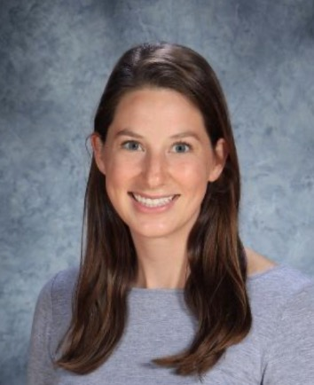

About Me
 My name is Julia Oswald, and I am a high school math teacher in Kansas City,
Missouri. This year I am teaching College Algebra, Precalculus, and Calculus. Over the years,
I have had the opportunity to teach all of the math classes my high school offers.
I completed my bachelor and master’s degrees in mathematics from
Central Methodist University. I plan to graduate in the Spring of 2022 from the Learning
Technologies and Design program.
I am excited to learn more about coding and to have web
development background knowledge to create a website for my class. I have a small background in
coding. I learned some Python in a numerical analysis class that I took for my master’s degree.
In my free time I enjoy spending time outside and biking. Whenever I have time to travel, I love
going to the mountains to hike and fish with my husband.
“Sometimes the questions are complicated, and the answers are simple.” -Dr. Seuss